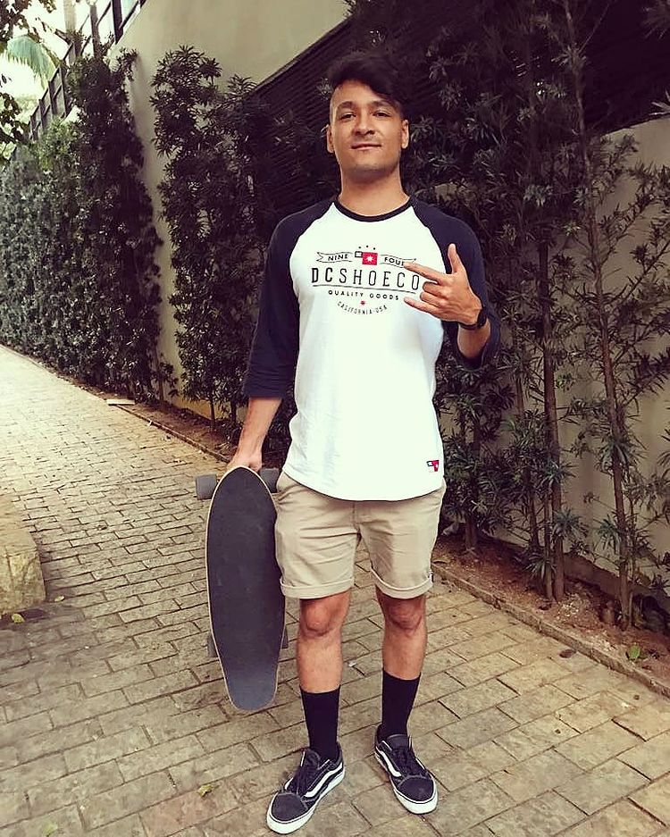
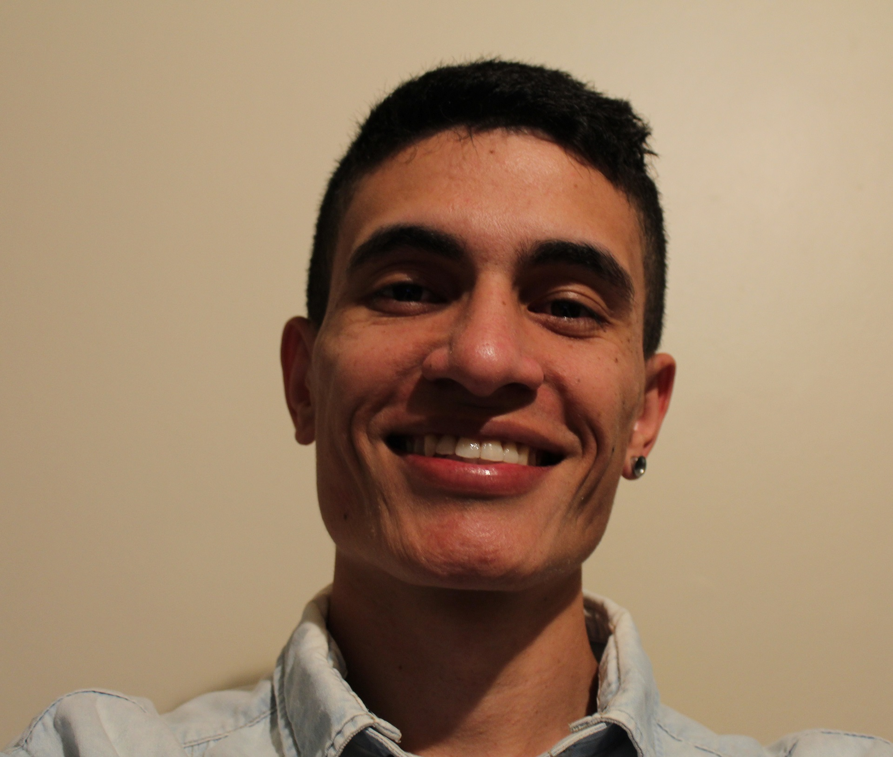

<section class="container">
  <div class="col-12 game-content mt-5 mb-5 pt-5 pb-5">
    <div class="row ">
      <div class="col-md-12">
          <h2 class="mb-5">Por que começamos a <span class="text-yellow">Sparta clã</span></h2>
          <p>Nós construímos a Sparta clã, uma plataforma de torneio baseada em habilidades pois adoramos
            assistir streamers e profissionais competindo em torneios ou fazendo lives, mas
            sentimos que não havia boas opções para jogadores casuais como nós. Na Sparta clã, todos
            podem competir em competições justas, divertidas e relevantes.</p>

          <h2 class="mb-5 mt-5">Divisões baseadas em <span class="text-yellow">habilidades</span></h2>
          <p>O que torna o Sparta clã diferente é nosso algoritmo de classificação proprietário, que analisa
            todas as estatísticas dos seus jogos para classificar seu time em uma divisão. Isso significa
            que você só estará competindo contra equipes de nível de habilidade semelhantes ao seu.<br><br>

            Jogar em torneios pode parecer desesperador quando você sabe que está competindo contra streamers e profissionais.
            A verdade é que nem todo mundo é pago para jogar COD 8 ou mais horas por dia; E algumas pessoas são simplesmente melhores do que você.
            Mas isso não significa que você não possa ter uma competição saudável e até mesmo ganhar algum dinheiro enquanto faz isso.
            Usando suas estatísticas históricas de jogo, sua equipe é colocada em uma divisão equilibrada, criando uma
            experiência de torneio emocionante, envolvente e justa que você pode realmente vencer.</p>
      </div>
    </div>

    <div class="row mt-5 mb-5 pt-5 pb-5">
        <div class="col-md-6 mb-5">
          <h2 class="mb-5 mt-5">Sobre os <span class="text-yellow">fundadores</span></h2>
          <p>A Sparta clã foi criada por dois nerdolas da tecnologia, Rafael Aquino e Paulo Bezerra, ambos jogadores de Warzone,
           colegas desde a época da faculdade e trabalhando juntos na mesma empresa.
           Jogamos COD praticamente todo dia e decidimos criar essa platafoma para divertir pessoas que também jogam e criar campeonatos tanto
           casuais quanto profissionais com os mais brabos streamers da cena.</p><br><br>

           <p>Se curtiu nossa ideia e quiser ser um apoiador desse projeto nos ajude doando qualquer quantia, ou se tiver ideias de melhoriras
             entre em contato conosco.</p>

           <app-buttom title="Doe para apoiar o projeto" routerLink="/"></app-buttom>
        </div>
        <div class="col-md-6">
          <div class="inner-about-img">
            
            

          </div>
        </div>
    </div>
  </div>
</section>
